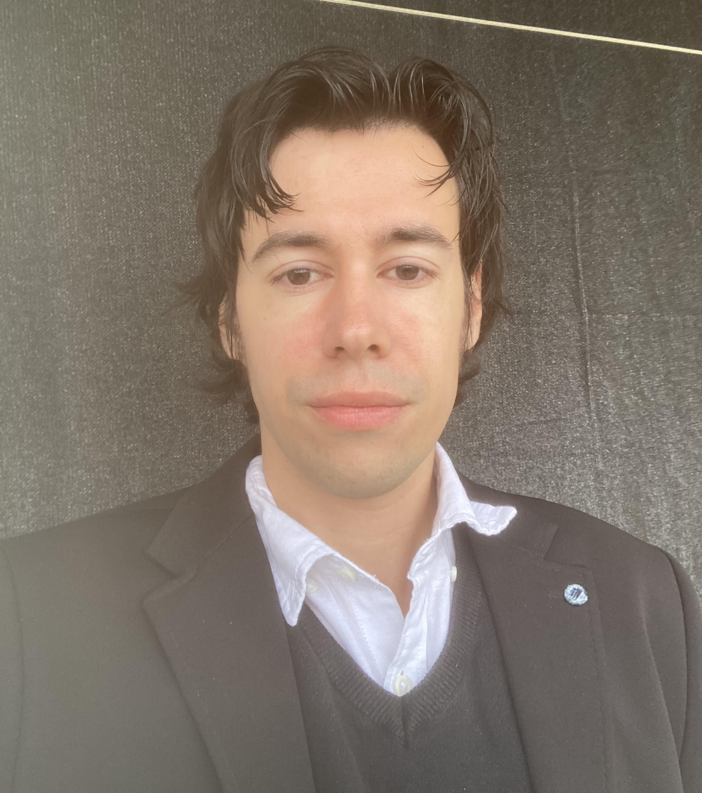

FilozofiaDenne
Filozofický týždenník
Najnovšie čísloVolám sa Marko Marciano. Počas dňa pracujem ako software engineer v oblasti kybernetickej bezpečnosti a vývoja umelej inteligencie, no večer ako filozof mysle v Neapole. Vyštudoval som analytickú chémiu na Università degli Studi di Napoli Federico II. Potom som pokračoval v štúdiu filozofie na Univerzita Pavla Jozefa Šafárika, odkiaľ som neskôr prestúpil na University of Oxford, kde som sa sústredil na filozofiu mysle. Filozofii sa venujem aktívne už 8 rokov a dávno sa stala súčasťou môjho každodenného života.
Cieľom projektu FilozofiaDenne je pomáhať ľuďom pochopiť vlastné myslenie v dobe AI a digitálneho zasýtenia. Neponúkam motivačné žvásty ani povzbudzujúce či utešujúce falošné slová. Ak je však vaša myseľ dostatočne otvorená, môžete spolu so mnou prostredníctvom diagnostiky myslenia nahliadnuť do najhlbších vrstiev vedomia. Všetok obsah je a vždy bude zadarmo. Keďže však na celý projekt — noviny, Instagram aj YouTube som sám, vyžaduje si to nemalé množstvo času a (nevyhnutne) aj hektolitre kávy. Ak chcete podporiť projekt FilozofiaDenne a moju závislosť od kofeínu, môžete tak dobrovoľne urobiť ľubovoľnou čiastkou na: SK59 0900 0000 0004 8402 1763 alebo cez odkaz: Na kávu .
